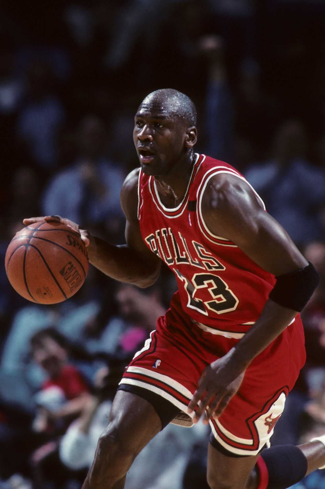
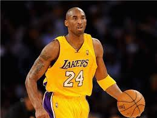

Популярні спортсмени



Баскетбол - спортивна командна гра з м'ячем, який закидають руками в кільце із сіткою, закріпленою на щиті на висоті 3 метри 5 сантиметрів над майданчиком.
Любі спортсмени. Незабаром буде проведено декілька тестових ігор, після яких буде обрано 4 гравця в команду "Смайлики". Реєструйтесь у формі що знизу. Чекаємо саме тебе в команді.